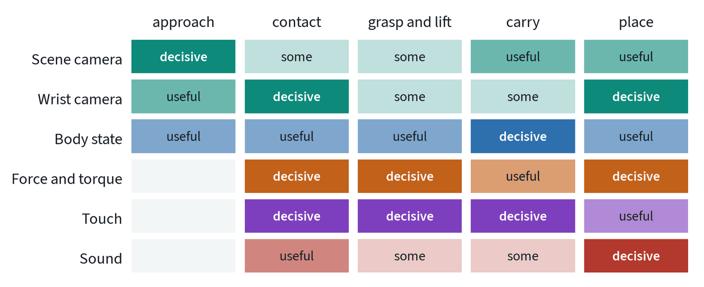
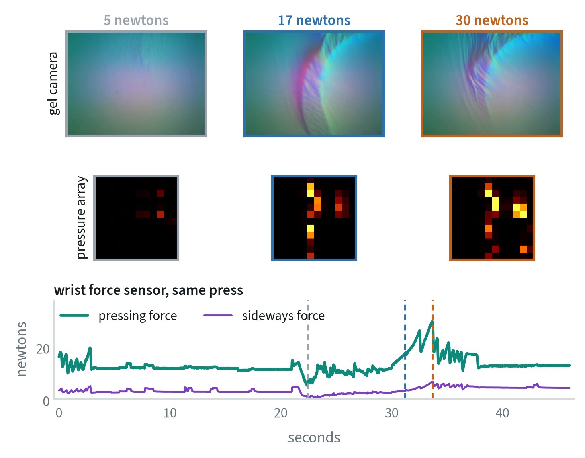
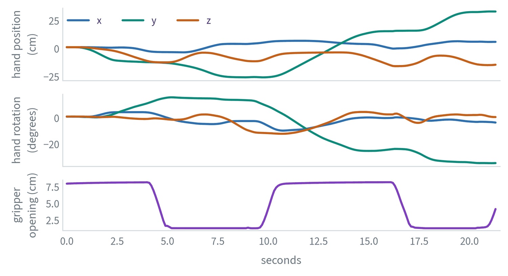
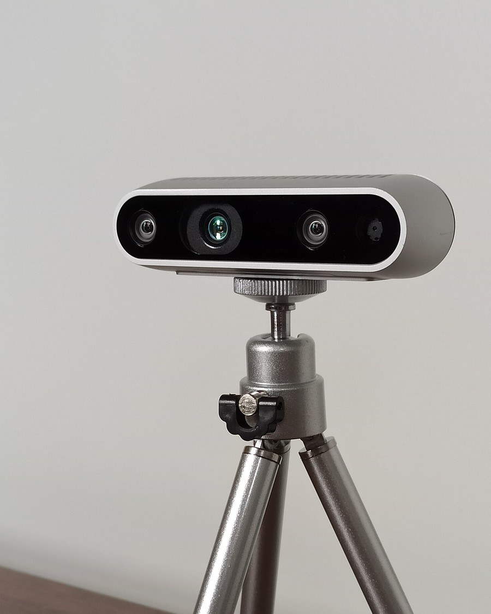
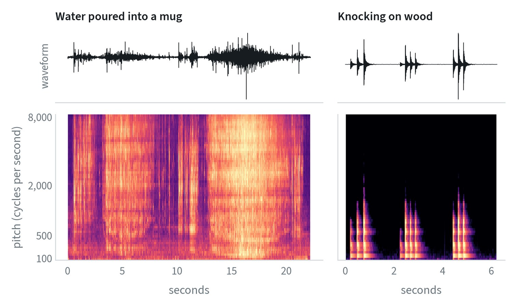
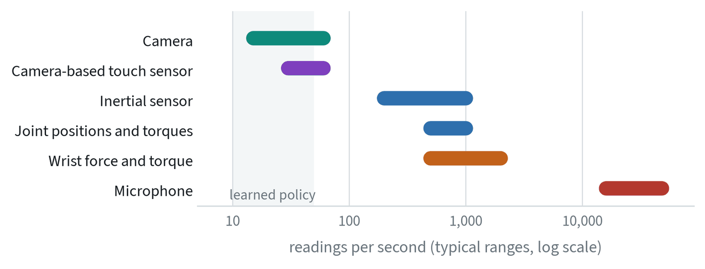
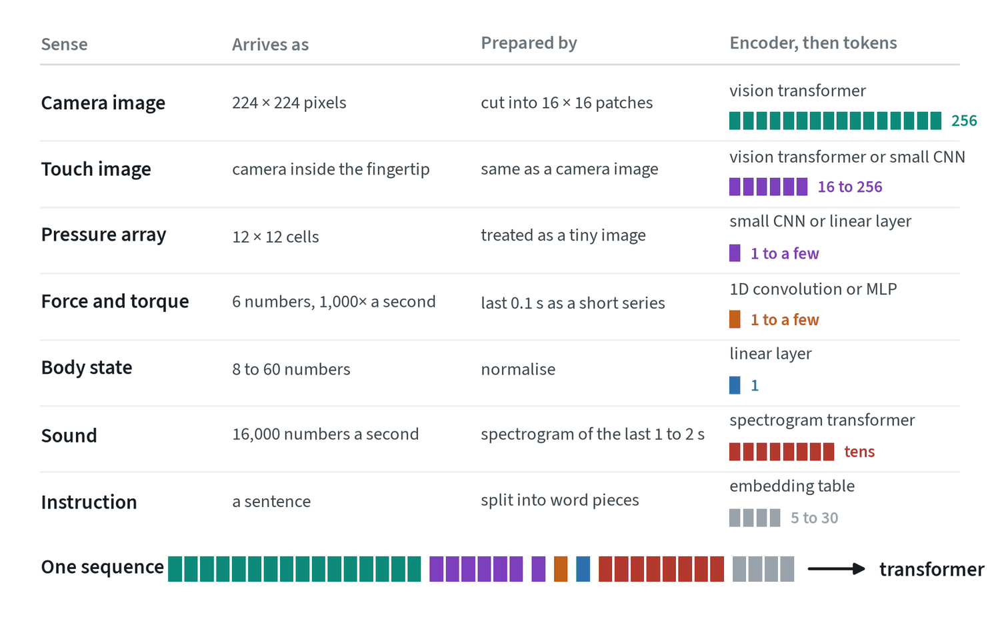
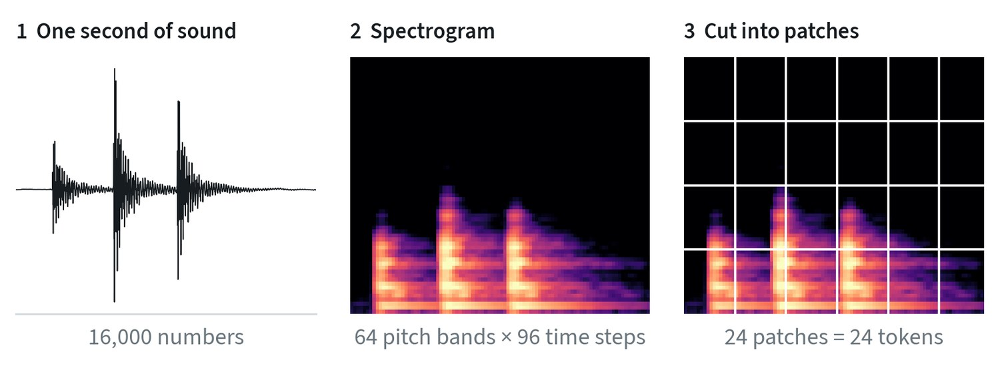
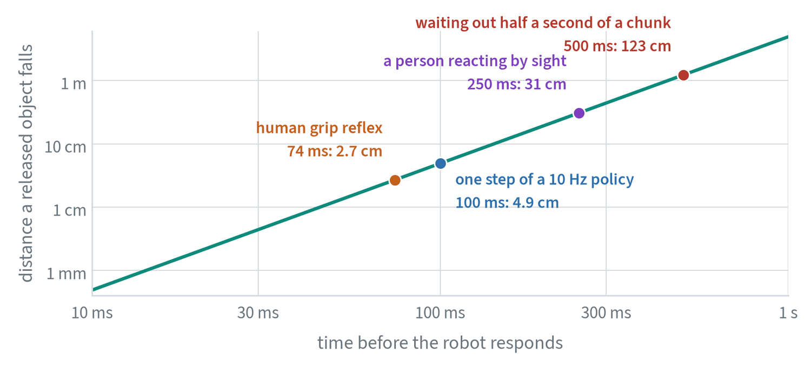
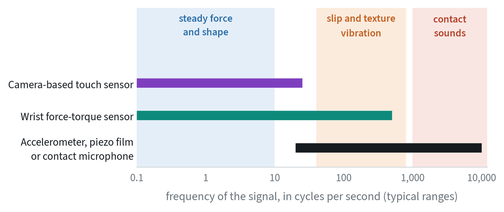

Vision is not enough
Robot policies are built around cameras, and for reaching toward things that is sufficient. Once the hand closes, the camera’s view is blocked and the questions change: is it in my grip, is it slipping, has it touched down? Those are answered by other senses.


What each sense tells the robot
| Sense | What it measures | Good for | Watch out for |
|---|---|---|---|
| Body state (proprioception) | Joint angles and speeds, gripper opening | Knowing where the robot is; always available and precise | Policies lean on it and ignore the cameras |
| Joint torque and motor current | How hard each joint is working | Detecting contact and load with no extra sensor | Noisy; mixes contact with the arm’s own weight and friction |
| Wrist force and torque | The total push and twist at the wrist | Insertion, wiping, pressing, knowing when to stop | Reports one total, not where contact is; drifts and needs zeroing |
| Touch, camera-based | A fine image of the fingertip’s skin deforming | Shape, texture and slip at the contact | Bulky; the skin wears; units differ from one another |
| Touch, pressure arrays | Pressure over a grid of cells | Covering fingers and palms; contact location | Coarse; says little about sideways force |
| Sound | Vibration through air, or through the gripper with a contact microphone | Contact events, slip, pouring, clicking into place | Motor and room noise; differs between sites |
| Inertial sensor | Acceleration and rate of turning | Balance and base motion on legged and mobile robots | Drifts when integrated over time |
| Depth and lidar | Distance to surfaces | Geometry, obstacles, navigation | Shiny, dark and transparent objects |
Less common inputs include thermal cameras, event cameras that report only changes in brightness, and radar. They solve specific problems and bring little shared data or tooling with them.
What the signals look like
It is easier to reason about a sense after seeing its raw data. These are real recordings.


The three sensors answer different questions about the same contact. The gel camera shows the shape pressing into the finger in fine detail. The pressure array shows where the contact is, coarsely. The force sensor gives one clean number for how hard, and nothing about where.


Body state is the plainest signal of all: a few smooth numbers per step. That is why it is so easy for a policy to lean on.
Depth cameras


A stereo depth camera finds the same point in two images taken a known distance apart. The point’s shift between the images, the disparity , gives its depth:
with the focal length in pixels and the baseline between the cameras. The second expression is the important one in practice. Depth error grows with the square of the distance, so a sensor that is accurate to a millimetre at 30 cm is accurate to about a centimetre at one metre. It also needs texture to match, which is why these cameras project an infrared pattern, and why they fail on shiny, transparent and very dark surfaces, where the pattern is reflected away or absorbed.
A closer look at sound


A spectrogram is the standard way to look at sound and to feed it to a model. The knock shows why. In the waveform the three knocks are spikes. In the spectrogram each is a column of bands that rings and fades, a pattern as recognisable as an object in a photo.
Sound is the newest of these in robot learning and the cheapest to add. A contact microphone on the gripper hears what the fingers do: the scrape of a spatula under food, the click of a plug seating, the change in pitch as a container fills. These are events a camera cannot see, and they arrive at the moment they happen.
The published work on this is direct about the conditions. Sound helps most where vision is ambiguous, in contact-rich tasks, and it has to be collected with the same microphone placement that the robot will use. Background noise in deployment differs from the collection site, so it is added during training as augmentation.
From a waveform to a spectrogram
The spectrograms above are computed with the short-time Fourier transform. The signal is cut into overlapping windows of length , each multiplied by a tapering function and transformed:
indexes time in hops of samples and indexes frequency. The window length sets an unavoidable trade: a long window resolves pitch finely and blurs timing, and a short one does the reverse. The figures here use 64 ms windows with a 10 ms hop at 16,000 samples a second.
The power is then pooled into bands spaced on the mel scale, which is roughly linear below 1,000 cycles a second and logarithmic above, matching how hearing resolves pitch, and the logarithm is taken:
The same recipe applies to any fast signal. A force sensor or an accelerometer on a fingertip can be turned into a spectrogram the same way, and the result fed to the same kind of encoder.
Different senses, different clocks


A policy that runs 10 to 50 times a second cannot take in a signal that arrives a thousand times a second sample by sample. Each fast signal is cut into a short window, the most recent tenth of a second for example, and encoded into a few tokens. Force becomes a short series. Sound becomes a spectrogram, a picture of pitch against time, and goes through an image-style encoder. Throwing the window away and keeping only the latest reading loses exactly what made the sense useful: the spike at impact, the vibration of a slip.
How a model takes each sense in
A transformer accepts only one thing: a sequence of tokens. Every sense therefore goes through the same three steps. It is cut into pieces, each piece is turned into a vector by an encoder built for that kind of signal, and the vectors join the sequence.


- Camera and touch images. Cut into square patches, and each patch becomes one token. A camera-based fingertip produces an image, so it uses the same machinery, usually a smaller encoder trained on touch images.
- Pressure arrays. Small enough to treat as a tiny image or to flatten into one vector.
- Force and torque. The last tenth of a second or so, as a short series of six-number readings, goes through a small network that outputs one or a few tokens. The window is what preserves spikes and vibration.
- Body state. Normalised and passed through a single linear layer to become one token.
- Instruction. Split into word pieces by the language model’s tokenizer, each looked up in a table of vectors. “put the white mug on the plate” becomes seven tokens: put, the, white, mug, on, the, plate.


Sound takes one extra step, because 16,000 numbers a second is far too many to use directly. The waveform is converted to a spectrogram, and the spectrogram is then cut into patches exactly as a photo would be. This is why image models adapt so readily to audio.
Two design choices recur across all of these. The first is how many tokens to spend: more tokens keep more detail and make every pass through the model slower, which the deployment note quantifies. The second is where each encoder comes from. The image encoder arrives pretrained on the web. Encoders for touch, force and sound usually start from nothing and learn only from robot data.
Deadlines: how fast is fast enough
How quickly a robot must act on a sense is set by physics, not by preference. The clearest case is a slipping object, where gravity is the clock.


People tighten their grip about 74 milliseconds after an object starts to slip, a reflex that runs through touch and does not wait for the eyes or for a decision. Reacting to something seen takes three times as long. A robot that only notices a slip when its next action chunk begins has, by then, dropped the object.
![Three groups of bars on a log time axis from 1 millisecond to 3 seconds. What happens at the fingers: first contact in 1 to 5 milliseconds, slip developing over tens of milliseconds, grip and load changing over tenths of a second. How fast people respond: grip reflex about 74 milliseconds, reacting to sight 200 to 250, choosing between options 300 to 500. How fast each robot layer responds: motor controller 1 to 2 milliseconds, compliant control loop 1 to 10, one policy step 20 to 100, waiting for the next chunk 0.5 to 2 seconds, high-level model 1 to 3 seconds.](img/guide/timescales.png)
The figure gives a rule for where each sense should be handled. Anything faster than about ten milliseconds, such as limiting force at first contact, belongs in the controller and never reaches the learned policy. Events of tens of milliseconds, such as a slip starting, need either a policy that can react between chunks or a fast reflex beside it. Slow changes, such as how the grasp is settling, fit the policy’s normal rate. Meaning, such as a spoken “stop”, can wait for the high-level model.
Touch has two bands


Touch carries two different kinds of information. The slow part is steady force and the shape of the contact: how hard the fingers press and where. The fast part is vibration, a buzz of tens to hundreds of cycles a second that appears when a surface starts to slide and that also encodes texture. Human skin has separate receptors for each.
This matters when choosing a sensor. Camera-based fingertips give a rich picture of the slow part and, at camera frame rates, cannot carry the fast part. Vibration needs a sensor that reads hundreds or thousands of times a second: a fast force sensor, a small accelerometer, a piezo film, or a contact microphone, which is why touch and sound overlap in practice. When recording a dataset, keep the raw fast signal and note the sensor type and its rate. A summary computed at collection time cannot be recomputed later.
Combining senses in one policy
In a transformer policy, combining senses is mechanically simple. Each one gets its own small encoder that turns it into tokens, and the tokens join the same sequence as the image and language tokens. The difficulty is in the training.
- One sense dominates. Vision predicts the action well for most of every episode, so the policy learns to rely on it and gives the others almost no weight. The usual remedy is to randomly drop or blank a sense during training, so that the policy has to be able to use each.
- Check that it is used. Run the policy with one sense removed or replaced by noise. If success does not change, that sense is not contributing, whatever the architecture diagram says.
- Sensors differ. Two touch sensors of the same model give different readings, and a microphone moved by a centimetre hears something else. Calibrate, or collect across several units.
- Little shared data. Almost no large public dataset includes touch or sound, so these encoders start from scratch while the vision encoder starts from the whole web.
The practical order is to add a sense when a specific failure calls for it: slipping calls for touch, missed insertions for force, events hidden from the camera for sound.
Common mistakes
- Adding sensors before finding the failure. Each one adds calibration, wear and a new way for training and deployment to differ.
- Feeding only the latest reading. Fast senses carry their information in how the signal changes over a short window.
- Assuming a sense is used. Test with it removed.
Terms
- Proprioception
- A robot’s sense of its own joint positions, speeds and efforts.
- Force-torque sensor
- A sensor, usually at the wrist, that measures the total push and twist applied to the hand.
- Tactile sensor
- A sensor on the fingers or palm that measures contact over an area.
- Spectrogram
- A picture of a sound: time across, pitch up, loudness as brightness.
- Modality dropout
- Randomly removing one input type during training so the policy cannot depend on a single one.
- Disparity
- The shift of a point between the two images of a stereo camera; inversely proportional to its depth.
- Short-time Fourier transform
- The Fourier transform applied to successive short windows of a signal, giving frequency content over time.
- Mel scale
- A frequency scale spaced the way human hearing resolves pitch.
Further reading
- Gong et al., 2021. AST: Audio Spectrogram Transformer.
- Johansson and Westling, 1987. Signals in tactile afferents from the fingers eliciting adaptive motor responses during precision grip. Experimental Brain Research 66.
- Howe and Cutkosky, 1989. Sensing skin acceleration for slip and texture perception. IEEE International Conference on Robotics and Automation.
- Li et al., 2022. See, Hear, and Feel: Smart Sensory Fusion for Robotic Manipulation.
- Liu et al., 2024. ManiWAV: Learning Robot Manipulation from In-the-Wild Audio-Visual Data.
- Huang et al., 2024. 3D-ViTac: Learning Fine-Grained Manipulation with Visuo-Tactile Sensing.